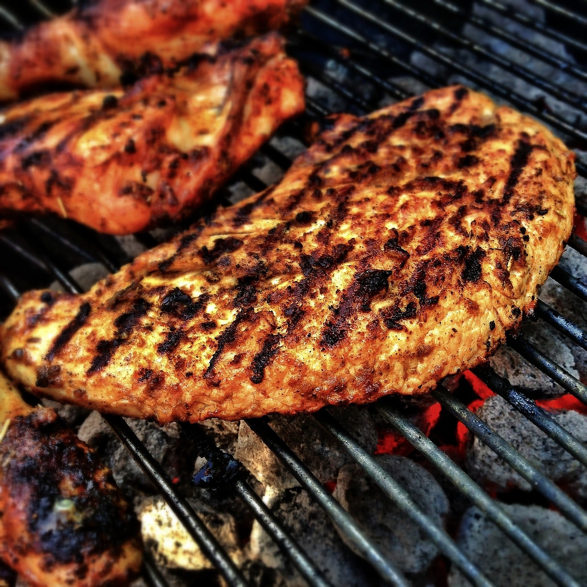

I love Cooking
I love cooking. It is not only a hobby, I find cooking to be therapeutic. As a computer programming student from Pakistan, I enjoy exploring the world of coding, but in the kitchen, I find a different kind of creativity. One of my absolute favorite things to cook is grilling and barbecuing beef and chicken. In Pakistan, we have a rich culinary tradition, and I take great pride in preparing dishes that are a reflection of our culture. When I fire up the grill, marinate the meat with flavorful spices, and watch it sizzle, it's like writing a piece of code that comes to life. The process is just as important as the end result. Cooking allows me to experiment with different ingredients, much like programming lets me play with code. Whether it's perfecting the art of marination or getting the grill temperature just right, it's all about precision and getting that delicious output. So, while I may be immersed in the world of programming, my love for cooking, especially grilling and barbecue, reminds me that there's beauty in creating something tangible and delicious outside the digital realm. It's a delightful balance to my coding journey.